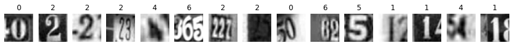
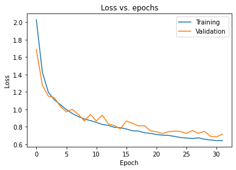
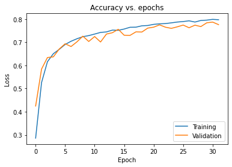
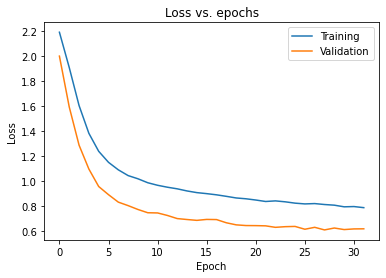
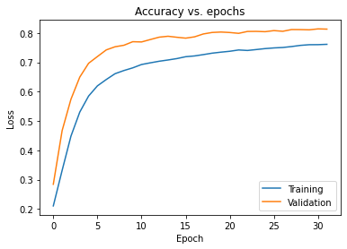

Image classifier for the The Street View House Numbers (SVHN) Dataset
In this notebook, you will use a neural network that classifies real-world images digits. You will use concepts from throughout this course to run different part of model on either CPU or GPU and compare the results.
import tensorflow as tf
import time
from scipy.io import loadmat
---------------------------------------------------------------------------
ModuleNotFoundError Traceback (most recent call last)
Cell In[1], line 1
----> 1 import tensorflow as tf
2 import time
3 from scipy.io import loadmat
ModuleNotFoundError: No module named 'tensorflow'
!wget http://ufldl.stanford.edu/housenumbers/train_32x32.mat
!wget http://ufldl.stanford.edu/housenumbers/test_32x32.mat
--2022-01-30 15:58:24-- http://ufldl.stanford.edu/housenumbers/train_32x32.mat
Resolving ufldl.stanford.edu (ufldl.stanford.edu)... 171.64.68.10
Connecting to ufldl.stanford.edu (ufldl.stanford.edu)|171.64.68.10|:80... connected.
HTTP request sent, awaiting response... 200 OK
Length: 182040794 (174M) [text/plain]
Saving to: ‘train_32x32.mat.3’
100%[======================================>] 182,040,794 15.1MB/s in 16s
2022-01-30 15:58:41 (10.6 MB/s) - ‘train_32x32.mat.3’ saved [182040794/182040794]
--2022-01-30 15:58:41-- http://ufldl.stanford.edu/housenumbers/test_32x32.mat
Resolving ufldl.stanford.edu (ufldl.stanford.edu)... 171.64.68.10
Connecting to ufldl.stanford.edu (ufldl.stanford.edu)|171.64.68.10|:80... connected.
HTTP request sent, awaiting response... 200 OK
Length: 64275384 (61M) [text/plain]
Saving to: ‘test_32x32.mat.3’
100%[======================================>] 64,275,384 14.2MB/s in 9.3s
2022-01-30 15:58:50 (6.58 MB/s) - ‘test_32x32.mat.3’ saved [64275384/64275384]
train = loadmat('train_32x32.mat')
test = loadmat('test_32x32.mat')
import numpy as np
import pandas as pd
import matplotlib.pyplot as plt
from tensorflow.keras.models import Sequential, load_model
from tensorflow.keras.layers import Dense, Flatten, Conv2D, MaxPooling2D, BatchNormalization, Dropout
from tensorflow.keras.callbacks import ModelCheckpoint, ReduceLROnPlateau, EarlyStopping
%matplotlib inline
x_train = train['X']/255.
y_train = train['y']
x_test = test['X']/255.
y_test = test['y']
y_train[y_train == 10] = 0
y_test[y_test == 10] = 0
num_plts = 15
fig, ax = plt.subplots(1, num_plts, figsize=(num_plts, 1))
im_set = np.random.random_integers(1, x_train.shape[3], num_plts)
for i in range(len(im_set)):
ax[i].imshow(x_train[:,:,:,im_set[i]])
ax[i].axis('off')
ax[i].set_title(y_train[im_set[i]][0])
plt.show()
<ipython-input-7-eea9e1d3e61f>:3: DeprecationWarning: This function is deprecated. Please call randint(1, 73257 + 1) instead
im_set = np.random.random_integers(1, x_train.shape[3], num_plts)
x_train_gs = np.mean(x_train, axis = 2, keepdims=True)
x_train_gs = x_train_gs.transpose(3,0,1,2)
x_test_gs = np.mean(x_test, axis = 2, keepdims=True)
x_test_gs = x_test_gs.transpose(3,0,1,2)
fig, ax = plt.subplots(1, num_plts, figsize=(num_plts, 1))
for i in range(len(im_set)):
ax[i].imshow(x_train_gs[im_set[i],:,:,0], cmap = 'gray')
ax[i].axis('off')
ax[i].set_title(y_train[im_set[i]][0])
plt.show()

MLP neural network classi
def get_model(input_shape, dropout_rate, nn_units):
model = Sequential([Flatten(input_shape = input_shape),
Dense(nn_units, activation = 'relu', kernel_initializer = 'he_uniform'),
Dropout(dropout_rate),
Dense(nn_units, activation = 'relu', kernel_initializer = 'he_uniform'),
Dropout(dropout_rate),
Dense(nn_units, activation = 'relu', kernel_initializer = 'he_uniform'),
Dropout(dropout_rate),
Dense(nn_units, activation = 'relu', kernel_initializer = 'he_uniform'),
Dropout(dropout_rate),
Dense(10, activation = 'softmax')])
model.compile(optimizer = 'adam', loss = 'sparse_categorical_crossentropy', metrics=["accuracy"])
return model
model_mlp = get_model(x_train_gs.shape[1:4],0,64)
model_mlp.summary()
Model: "sequential"
_________________________________________________________________
Layer (type) Output Shape Param #
=================================================================
flatten (Flatten) (None, 1024) 0
_________________________________________________________________
dense (Dense) (None, 64) 65600
_________________________________________________________________
dropout (Dropout) (None, 64) 0
_________________________________________________________________
dense_1 (Dense) (None, 64) 4160
_________________________________________________________________
dropout_1 (Dropout) (None, 64) 0
_________________________________________________________________
dense_2 (Dense) (None, 64) 4160
_________________________________________________________________
dropout_2 (Dropout) (None, 64) 0
_________________________________________________________________
dense_3 (Dense) (None, 64) 4160
_________________________________________________________________
dropout_3 (Dropout) (None, 64) 0
_________________________________________________________________
dense_4 (Dense) (None, 10) 650
=================================================================
Total params: 78,730
Trainable params: 78,730
Non-trainable params: 0
_________________________________________________________________
checkpoint_best_path = 'mlp_chkpnts_bst/chkpnt'
checkpoint_best = ModelCheckpoint(filepath=checkpoint_best_path, save_weights_only=True, monitor='val_accuracy', save_best_only = True, verbose = 1)
earlystop = EarlyStopping(monitor='loss', patience = 5)
epochs = 32
batch_size = 2*64
start = time.time()
history_mlp = model_mlp.fit(x_train_gs, y_train, epochs = epochs, batch_size=batch_size,
validation_split = 0.15, callbacks=[checkpoint_best, earlystop])
endt = time.time()-start
print("Time for {} epochs: {:0.2f}ms".format(epochs,1000*endt))
Epoch 1/32
487/487 [==============================] - 3s 4ms/step - loss: 2.0275 - accuracy: 0.2860 - val_loss: 1.6855 - val_accuracy: 0.4246
Epoch 00001: val_accuracy improved from -inf to 0.42461, saving model to mlp_chkpnts_bst/chkpnt
Epoch 2/32
487/487 [==============================] - 2s 3ms/step - loss: 1.4256 - accuracy: 0.5258 - val_loss: 1.2767 - val_accuracy: 0.5843
Epoch 00002: val_accuracy improved from 0.42461 to 0.58431, saving model to mlp_chkpnts_bst/chkpnt
Epoch 3/32
487/487 [==============================] - 2s 3ms/step - loss: 1.1960 - accuracy: 0.6162 - val_loss: 1.1506 - val_accuracy: 0.6343
Epoch 00003: val_accuracy improved from 0.58431 to 0.63427, saving model to mlp_chkpnts_bst/chkpnt
Epoch 4/32
487/487 [==============================] - 2s 3ms/step - loss: 1.1088 - accuracy: 0.6508 - val_loss: 1.1331 - val_accuracy: 0.6373
Epoch 00004: val_accuracy improved from 0.63427 to 0.63727, saving model to mlp_chkpnts_bst/chkpnt
Epoch 5/32
487/487 [==============================] - 2s 3ms/step - loss: 1.0540 - accuracy: 0.6697 - val_loss: 1.0346 - val_accuracy: 0.6711
Epoch 00005: val_accuracy improved from 0.63727 to 0.67113, saving model to mlp_chkpnts_bst/chkpnt
Epoch 6/32
487/487 [==============================] - 2s 3ms/step - loss: 0.9972 - accuracy: 0.6907 - val_loss: 0.9705 - val_accuracy: 0.6938
Epoch 00006: val_accuracy improved from 0.67113 to 0.69378, saving model to mlp_chkpnts_bst/chkpnt
Epoch 7/32
487/487 [==============================] - 2s 3ms/step - loss: 0.9510 - accuracy: 0.7046 - val_loss: 0.9991 - val_accuracy: 0.6819
Epoch 00007: val_accuracy did not improve from 0.69378
Epoch 8/32
487/487 [==============================] - 1s 2ms/step - loss: 0.9164 - accuracy: 0.7154 - val_loss: 0.9410 - val_accuracy: 0.7021
Epoch 00008: val_accuracy improved from 0.69378 to 0.70207, saving model to mlp_chkpnts_bst/chkpnt
Epoch 9/32
487/487 [==============================] - 2s 3ms/step - loss: 0.8889 - accuracy: 0.7244 - val_loss: 0.8663 - val_accuracy: 0.7265
Epoch 00009: val_accuracy improved from 0.70207 to 0.72654, saving model to mlp_chkpnts_bst/chkpnt
Epoch 10/32
487/487 [==============================] - 2s 3ms/step - loss: 0.8705 - accuracy: 0.7290 - val_loss: 0.9407 - val_accuracy: 0.7037
Epoch 00010: val_accuracy did not improve from 0.72654
Epoch 11/32
487/487 [==============================] - 1s 3ms/step - loss: 0.8502 - accuracy: 0.7358 - val_loss: 0.8658 - val_accuracy: 0.7250
Epoch 00011: val_accuracy did not improve from 0.72654
Epoch 12/32
487/487 [==============================] - 1s 3ms/step - loss: 0.8262 - accuracy: 0.7428 - val_loss: 0.9319 - val_accuracy: 0.7014
Epoch 00012: val_accuracy did not improve from 0.72654
Epoch 13/32
487/487 [==============================] - 1s 2ms/step - loss: 0.8152 - accuracy: 0.7450 - val_loss: 0.8316 - val_accuracy: 0.7357
Epoch 00013: val_accuracy improved from 0.72654 to 0.73574, saving model to mlp_chkpnts_bst/chkpnt
Epoch 14/32
487/487 [==============================] - 2s 3ms/step - loss: 0.7928 - accuracy: 0.7528 - val_loss: 0.8131 - val_accuracy: 0.7415
Epoch 00014: val_accuracy improved from 0.73574 to 0.74147, saving model to mlp_chkpnts_bst/chkpnt
Epoch 15/32
487/487 [==============================] - 1s 3ms/step - loss: 0.7891 - accuracy: 0.7519 - val_loss: 0.7754 - val_accuracy: 0.7563
Epoch 00015: val_accuracy improved from 0.74147 to 0.75630, saving model to mlp_chkpnts_bst/chkpnt
Epoch 16/32
487/487 [==============================] - 2s 3ms/step - loss: 0.7740 - accuracy: 0.7575 - val_loss: 0.8660 - val_accuracy: 0.7306
Epoch 00016: val_accuracy did not improve from 0.75630
Epoch 17/32
487/487 [==============================] - 1s 3ms/step - loss: 0.7540 - accuracy: 0.7651 - val_loss: 0.8394 - val_accuracy: 0.7301
Epoch 00017: val_accuracy did not improve from 0.75630
Epoch 18/32
487/487 [==============================] - 1s 3ms/step - loss: 0.7508 - accuracy: 0.7655 - val_loss: 0.8099 - val_accuracy: 0.7453
Epoch 00018: val_accuracy did not improve from 0.75630
Epoch 19/32
487/487 [==============================] - 1s 3ms/step - loss: 0.7313 - accuracy: 0.7714 - val_loss: 0.8126 - val_accuracy: 0.7445
Epoch 00019: val_accuracy did not improve from 0.75630
Epoch 20/32
487/487 [==============================] - 1s 3ms/step - loss: 0.7237 - accuracy: 0.7728 - val_loss: 0.7536 - val_accuracy: 0.7615
Epoch 00020: val_accuracy improved from 0.75630 to 0.76149, saving model to mlp_chkpnts_bst/chkpnt
Epoch 21/32
487/487 [==============================] - 2s 3ms/step - loss: 0.7111 - accuracy: 0.7777 - val_loss: 0.7429 - val_accuracy: 0.7655
Epoch 00021: val_accuracy improved from 0.76149 to 0.76549, saving model to mlp_chkpnts_bst/chkpnt
Epoch 22/32
487/487 [==============================] - 2s 3ms/step - loss: 0.7034 - accuracy: 0.7800 - val_loss: 0.7212 - val_accuracy: 0.7756
Epoch 00022: val_accuracy improved from 0.76549 to 0.77559, saving model to mlp_chkpnts_bst/chkpnt
Epoch 23/32
487/487 [==============================] - 2s 3ms/step - loss: 0.7007 - accuracy: 0.7811 - val_loss: 0.7422 - val_accuracy: 0.7654
Epoch 00023: val_accuracy did not improve from 0.77559
Epoch 24/32
487/487 [==============================] - 1s 2ms/step - loss: 0.6890 - accuracy: 0.7842 - val_loss: 0.7501 - val_accuracy: 0.7604
Epoch 00024: val_accuracy did not improve from 0.77559
Epoch 25/32
487/487 [==============================] - 1s 2ms/step - loss: 0.6766 - accuracy: 0.7877 - val_loss: 0.7457 - val_accuracy: 0.7669
Epoch 00025: val_accuracy did not improve from 0.77559
Epoch 26/32
487/487 [==============================] - 1s 3ms/step - loss: 0.6702 - accuracy: 0.7898 - val_loss: 0.7230 - val_accuracy: 0.7746
Epoch 00026: val_accuracy did not improve from 0.77559
Epoch 27/32
487/487 [==============================] - 2s 3ms/step - loss: 0.6650 - accuracy: 0.7930 - val_loss: 0.7561 - val_accuracy: 0.7630
Epoch 00027: val_accuracy did not improve from 0.77559
Epoch 28/32
487/487 [==============================] - 2s 3ms/step - loss: 0.6728 - accuracy: 0.7877 - val_loss: 0.7246 - val_accuracy: 0.7741
Epoch 00028: val_accuracy did not improve from 0.77559
Epoch 29/32
487/487 [==============================] - 2s 3ms/step - loss: 0.6571 - accuracy: 0.7945 - val_loss: 0.7473 - val_accuracy: 0.7680
Epoch 00029: val_accuracy did not improve from 0.77559
Epoch 30/32
487/487 [==============================] - 2s 3ms/step - loss: 0.6480 - accuracy: 0.7959 - val_loss: 0.6907 - val_accuracy: 0.7844
Epoch 00030: val_accuracy improved from 0.77559 to 0.78442, saving model to mlp_chkpnts_bst/chkpnt
Epoch 31/32
487/487 [==============================] - 2s 3ms/step - loss: 0.6411 - accuracy: 0.7992 - val_loss: 0.6842 - val_accuracy: 0.7874
Epoch 00031: val_accuracy improved from 0.78442 to 0.78742, saving model to mlp_chkpnts_bst/chkpnt
Epoch 32/32
487/487 [==============================] - 2s 3ms/step - loss: 0.6410 - accuracy: 0.7976 - val_loss: 0.7157 - val_accuracy: 0.7764
Epoch 00032: val_accuracy did not improve from 0.78742
Time for 32 epochs: 50671.81ms
plt.plot(history_mlp.history['loss'])
plt.plot(history_mlp.history['val_loss'])
plt.title('Loss vs. epochs')
plt.ylabel('Loss')
plt.xlabel('Epoch')
plt.legend(['Training', 'Validation'], loc='upper right')
plt.show()

plt.plot(history_mlp.history['accuracy'])
plt.plot(history_mlp.history['val_accuracy'])
plt.title('Accuracy vs. epochs')
plt.ylabel('Loss')
plt.xlabel('Epoch')
plt.legend(['Training', 'Validation'], loc='lower right')
plt.show()

CNN neural network classifier
def get_model_cnn(input_shape, dropout_rate, nn_units):
model = Sequential([
Conv2D(8, (3,3), padding = 'same', activation = 'relu', kernel_initializer = 'he_uniform', input_shape = input_shape),
MaxPooling2D((3,3)),
Conv2D(16, (3,3), padding = 'same', activation = 'relu', kernel_initializer = 'he_uniform'),
MaxPooling2D((3,3)),
Flatten(),
Dense(nn_units, activation='relu', kernel_initializer = 'he_uniform'),
Dropout(dropout_rate),
Dense(nn_units, activation='relu', kernel_initializer = 'he_uniform'),
Dropout(dropout_rate),
Dense(10, activation='softmax'),
])
model.compile(optimizer = 'adam', loss = 'sparse_categorical_crossentropy', metrics = ['accuracy'])
return model
model_cnn = get_model_cnn(x_train_gs.shape[1:4], 0.5, 64)
model_cnn.summary()
Model: "sequential_1"
_________________________________________________________________
Layer (type) Output Shape Param #
=================================================================
conv2d (Conv2D) (None, 32, 32, 8) 80
_________________________________________________________________
max_pooling2d (MaxPooling2D) (None, 10, 10, 8) 0
_________________________________________________________________
conv2d_1 (Conv2D) (None, 10, 10, 16) 1168
_________________________________________________________________
max_pooling2d_1 (MaxPooling2 (None, 3, 3, 16) 0
_________________________________________________________________
flatten_1 (Flatten) (None, 144) 0
_________________________________________________________________
dense_5 (Dense) (None, 64) 9280
_________________________________________________________________
dropout_4 (Dropout) (None, 64) 0
_________________________________________________________________
dense_6 (Dense) (None, 64) 4160
_________________________________________________________________
dropout_5 (Dropout) (None, 64) 0
_________________________________________________________________
dense_7 (Dense) (None, 10) 650
=================================================================
Total params: 15,338
Trainable params: 15,338
Non-trainable params: 0
_________________________________________________________________
checkpoint_best_path = 'cnn_chkpnts_bst/chkpnt'
checkpoint_best = ModelCheckpoint(filepath=checkpoint_best_path, save_weights_only=True, monitor='val_accuracy', save_best_only = True, verbose = 1)
earlystop = EarlyStopping(monitor='loss', patience = 5)
start = time.time()
history_cnn = model_cnn.fit(x_train_gs, y_train, epochs = epochs, batch_size=batch_size,
validation_split = 0.15, callbacks=[checkpoint_best, earlystop])
endt = time.time()-start
print("Time for {} epochs: {:0.2f}ms".format(epochs,1000*endt))
Epoch 1/32
487/487 [==============================] - 5s 6ms/step - loss: 2.1898 - accuracy: 0.2108 - val_loss: 1.9989 - val_accuracy: 0.2845
Epoch 00001: val_accuracy improved from -inf to 0.28447, saving model to cnn_chkpnts_bst/chkpnt
Epoch 2/32
487/487 [==============================] - 2s 5ms/step - loss: 1.9080 - accuracy: 0.3317 - val_loss: 1.5927 - val_accuracy: 0.4672
Epoch 00002: val_accuracy improved from 0.28447 to 0.46719, saving model to cnn_chkpnts_bst/chkpnt
Epoch 3/32
487/487 [==============================] - 2s 5ms/step - loss: 1.6040 - accuracy: 0.4485 - val_loss: 1.2874 - val_accuracy: 0.5742
Epoch 00003: val_accuracy improved from 0.46719 to 0.57421, saving model to cnn_chkpnts_bst/chkpnt
Epoch 4/32
487/487 [==============================] - 2s 5ms/step - loss: 1.3819 - accuracy: 0.5304 - val_loss: 1.0964 - val_accuracy: 0.6496
Epoch 00004: val_accuracy improved from 0.57421 to 0.64956, saving model to cnn_chkpnts_bst/chkpnt
Epoch 5/32
487/487 [==============================] - 2s 5ms/step - loss: 1.2381 - accuracy: 0.5850 - val_loss: 0.9567 - val_accuracy: 0.6966
Epoch 00005: val_accuracy improved from 0.64956 to 0.69661, saving model to cnn_chkpnts_bst/chkpnt
Epoch 6/32
487/487 [==============================] - 2s 5ms/step - loss: 1.1499 - accuracy: 0.6197 - val_loss: 0.8914 - val_accuracy: 0.7195
Epoch 00006: val_accuracy improved from 0.69661 to 0.71954, saving model to cnn_chkpnts_bst/chkpnt
Epoch 7/32
487/487 [==============================] - 2s 5ms/step - loss: 1.0900 - accuracy: 0.6413 - val_loss: 0.8318 - val_accuracy: 0.7421
Epoch 00007: val_accuracy improved from 0.71954 to 0.74211, saving model to cnn_chkpnts_bst/chkpnt
Epoch 8/32
487/487 [==============================] - 2s 5ms/step - loss: 1.0440 - accuracy: 0.6611 - val_loss: 0.8039 - val_accuracy: 0.7528
Epoch 00008: val_accuracy improved from 0.74211 to 0.75284, saving model to cnn_chkpnts_bst/chkpnt
Epoch 9/32
487/487 [==============================] - 2s 4ms/step - loss: 1.0184 - accuracy: 0.6719 - val_loss: 0.7730 - val_accuracy: 0.7579
Epoch 00009: val_accuracy improved from 0.75284 to 0.75794, saving model to cnn_chkpnts_bst/chkpnt
Epoch 10/32
487/487 [==============================] - 2s 5ms/step - loss: 0.9868 - accuracy: 0.6810 - val_loss: 0.7470 - val_accuracy: 0.7700
Epoch 00010: val_accuracy improved from 0.75794 to 0.77004, saving model to cnn_chkpnts_bst/chkpnt
Epoch 11/32
487/487 [==============================] - 3s 5ms/step - loss: 0.9665 - accuracy: 0.6924 - val_loss: 0.7454 - val_accuracy: 0.7692
Epoch 00011: val_accuracy did not improve from 0.77004
Epoch 12/32
487/487 [==============================] - 2s 5ms/step - loss: 0.9510 - accuracy: 0.6982 - val_loss: 0.7253 - val_accuracy: 0.7775
Epoch 00012: val_accuracy improved from 0.77004 to 0.77750, saving model to cnn_chkpnts_bst/chkpnt
Epoch 13/32
487/487 [==============================] - 2s 5ms/step - loss: 0.9382 - accuracy: 0.7035 - val_loss: 0.7004 - val_accuracy: 0.7855
Epoch 00013: val_accuracy improved from 0.77750 to 0.78551, saving model to cnn_chkpnts_bst/chkpnt
Epoch 14/32
487/487 [==============================] - 2s 5ms/step - loss: 0.9211 - accuracy: 0.7078 - val_loss: 0.6929 - val_accuracy: 0.7886
Epoch 00014: val_accuracy improved from 0.78551 to 0.78861, saving model to cnn_chkpnts_bst/chkpnt
Epoch 15/32
487/487 [==============================] - 2s 4ms/step - loss: 0.9079 - accuracy: 0.7126 - val_loss: 0.6861 - val_accuracy: 0.7851
Epoch 00015: val_accuracy did not improve from 0.78861
Epoch 16/32
487/487 [==============================] - 2s 5ms/step - loss: 0.8997 - accuracy: 0.7189 - val_loss: 0.6937 - val_accuracy: 0.7821
Epoch 00016: val_accuracy did not improve from 0.78861
Epoch 17/32
487/487 [==============================] - 2s 5ms/step - loss: 0.8903 - accuracy: 0.7216 - val_loss: 0.6924 - val_accuracy: 0.7866
Epoch 00017: val_accuracy did not improve from 0.78861
Epoch 18/32
487/487 [==============================] - 2s 5ms/step - loss: 0.8782 - accuracy: 0.7261 - val_loss: 0.6669 - val_accuracy: 0.7964
Epoch 00018: val_accuracy improved from 0.78861 to 0.79643, saving model to cnn_chkpnts_bst/chkpnt
Epoch 19/32
487/487 [==============================] - 3s 5ms/step - loss: 0.8652 - accuracy: 0.7310 - val_loss: 0.6503 - val_accuracy: 0.8015
Epoch 00019: val_accuracy improved from 0.79643 to 0.80153, saving model to cnn_chkpnts_bst/chkpnt
Epoch 20/32
487/487 [==============================] - 2s 5ms/step - loss: 0.8586 - accuracy: 0.7345 - val_loss: 0.6447 - val_accuracy: 0.8030
Epoch 00020: val_accuracy improved from 0.80153 to 0.80298, saving model to cnn_chkpnts_bst/chkpnt
Epoch 21/32
487/487 [==============================] - 2s 5ms/step - loss: 0.8487 - accuracy: 0.7375 - val_loss: 0.6441 - val_accuracy: 0.8013
Epoch 00021: val_accuracy did not improve from 0.80298
Epoch 22/32
487/487 [==============================] - 2s 5ms/step - loss: 0.8370 - accuracy: 0.7419 - val_loss: 0.6423 - val_accuracy: 0.7985
Epoch 00022: val_accuracy did not improve from 0.80298
Epoch 23/32
487/487 [==============================] - 2s 5ms/step - loss: 0.8418 - accuracy: 0.7402 - val_loss: 0.6304 - val_accuracy: 0.8050
Epoch 00023: val_accuracy improved from 0.80298 to 0.80499, saving model to cnn_chkpnts_bst/chkpnt
Epoch 24/32
487/487 [==============================] - 2s 5ms/step - loss: 0.8343 - accuracy: 0.7433 - val_loss: 0.6356 - val_accuracy: 0.8053
Epoch 00024: val_accuracy improved from 0.80499 to 0.80526, saving model to cnn_chkpnts_bst/chkpnt
Epoch 25/32
487/487 [==============================] - 2s 4ms/step - loss: 0.8237 - accuracy: 0.7466 - val_loss: 0.6377 - val_accuracy: 0.8042
Epoch 00025: val_accuracy did not improve from 0.80526
Epoch 26/32
487/487 [==============================] - 3s 5ms/step - loss: 0.8176 - accuracy: 0.7489 - val_loss: 0.6151 - val_accuracy: 0.8079
Epoch 00026: val_accuracy improved from 0.80526 to 0.80790, saving model to cnn_chkpnts_bst/chkpnt
Epoch 27/32
487/487 [==============================] - 3s 5ms/step - loss: 0.8202 - accuracy: 0.7504 - val_loss: 0.6305 - val_accuracy: 0.8055
Epoch 00027: val_accuracy did not improve from 0.80790
Epoch 28/32
487/487 [==============================] - 3s 5ms/step - loss: 0.8128 - accuracy: 0.7536 - val_loss: 0.6098 - val_accuracy: 0.8114
Epoch 00028: val_accuracy improved from 0.80790 to 0.81145, saving model to cnn_chkpnts_bst/chkpnt
Epoch 29/32
487/487 [==============================] - 2s 5ms/step - loss: 0.8075 - accuracy: 0.7575 - val_loss: 0.6249 - val_accuracy: 0.8113
Epoch 00029: val_accuracy did not improve from 0.81145
Epoch 30/32
487/487 [==============================] - 2s 5ms/step - loss: 0.7944 - accuracy: 0.7598 - val_loss: 0.6125 - val_accuracy: 0.8105
Epoch 00030: val_accuracy did not improve from 0.81145
Epoch 31/32
487/487 [==============================] - 2s 5ms/step - loss: 0.7965 - accuracy: 0.7600 - val_loss: 0.6177 - val_accuracy: 0.8137
Epoch 00031: val_accuracy improved from 0.81145 to 0.81372, saving model to cnn_chkpnts_bst/chkpnt
Epoch 32/32
487/487 [==============================] - 2s 4ms/step - loss: 0.7877 - accuracy: 0.7611 - val_loss: 0.6186 - val_accuracy: 0.8129
Epoch 00032: val_accuracy did not improve from 0.81372
Time for 32 epochs: 80914.55ms
plt.plot(history_cnn.history['loss'])
plt.plot(history_cnn.history['val_loss'])
plt.title('Loss vs. epochs')
plt.ylabel('Loss')
plt.xlabel('Epoch')
plt.legend(['Training', 'Validation'], loc='upper right')
plt.show()

plt.plot(history_cnn.history['accuracy'])
plt.plot(history_cnn.history['val_accuracy'])
plt.title('Accuracy vs. epochs')
plt.ylabel('Loss')
plt.xlabel('Epoch')
plt.legend(['Training', 'Validation'], loc='lower right')
plt.show()

Evaluations
model_cnn.evaluate(x_test_gs, y_test, verbose = 2)
814/814 - 1s - loss: 0.6378 - accuracy: 0.8121
[0.6377912163734436, 0.8121158480644226]
model_mlp.evaluate(x_test_gs, y_test, verbose = 2)
814/814 - 1s - loss: 0.8270 - accuracy: 0.7529
[0.8269519209861755, 0.7528810501098633]
Predictions
preds_mlp = model_mlp.predict(x_test_gs)
### Predictions from MLP
num_plts = 5
fig, ax = plt.subplots(2, num_plts, figsize=(3*num_plts, 4))
im_set = np.random.random_integers(1, y_test.shape[0], num_plts)
for i in range(len(im_set)):
ax[0, i].imshow(x_test[:,:,:,im_set[i]])
ax[0, i].axis('off')
ax[0, i].set_title('True label: {0:1d}'.format(y_test[im_set[i]][0]))
ax[1, i].bar(x = range(10), height=preds_mlp[im_set[i],:])
ax[1, i].set_title('Pred label: {0:1d}'.format(np.argmax(preds_mlp[im_set[i],:])))
plt.show()
<ipython-input-27-ad7f68ec124b>:7: DeprecationWarning: This function is deprecated. Please call randint(1, 26032 + 1) instead
im_set = np.random.random_integers(1, y_test.shape[0], num_plts)
preds_cnn = model_cnn.predict(x_test_gs)
### Predictions from CNN
num_plts = 5
fig, ax = plt.subplots(2, num_plts, figsize=(3*num_plts, 4))
im_set = np.random.random_integers(1, y_test.shape[0], num_plts)
for i in range(len(im_set)):
ax[0, i].imshow(x_test[:,:,:,im_set[i]])
ax[0, i].axis('off')
ax[0, i].set_title('True label: {0:1d}'.format(y_test[im_set[i]][0]))
ax[1, i].bar(x = range(10), height=preds_cnn[im_set[i],:])
ax[1, i].set_title('Pred label: {0:1d}'.format(np.argmax(preds_cnn[im_set[i],:])))
plt.show()
<ipython-input-28-1b24431bdb07>:7: DeprecationWarning: This function is deprecated. Please call randint(1, 26032 + 1) instead
im_set = np.random.random_integers(1, y_test.shape[0], num_plts)